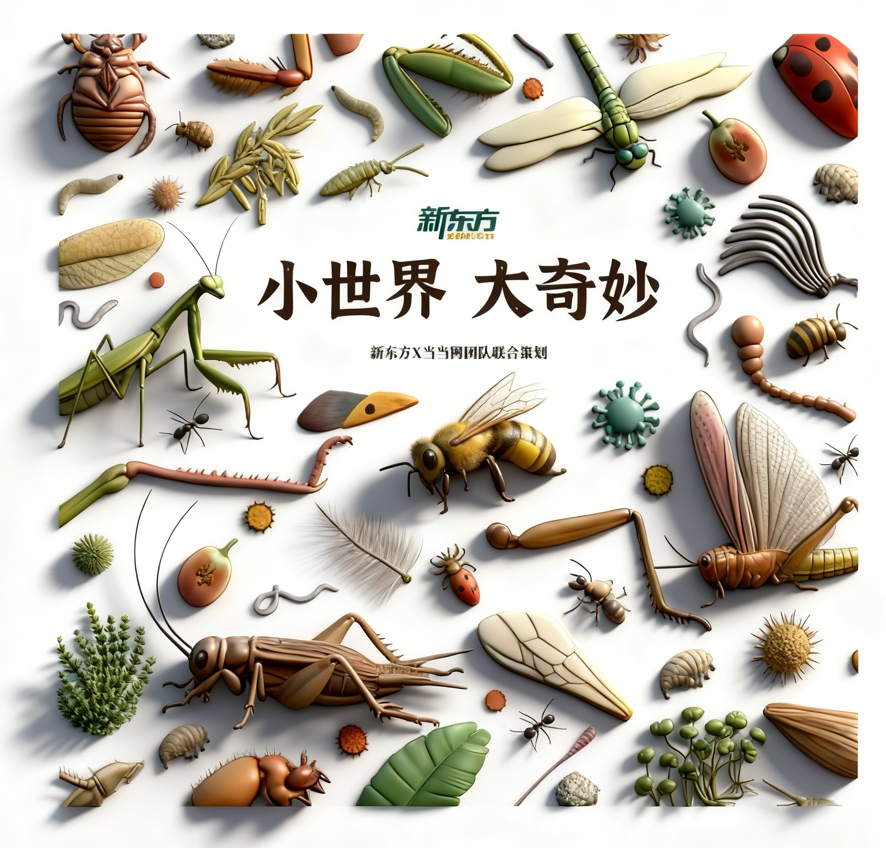

配套书籍
这里展示与显微镜相关的配套书籍资源，带你从观察入门到实验记录一步步提升。

推荐阅读
《小世界 大奇妙》
这本图文并茂的显微镜入门书，从常见样品、观察方法到实验报告写作，帮你快速建立显微镜学习框架。
每个孩子都是天生的探险家，而由新东方与当当网团队联合策划的《小世界 大奇妙》，正是为他们开启微观大门的那把金钥匙。这不仅仅是一本显微镜的配套书籍，更是一套融合了深厚教育底蕴与专业阅读指导的科学启蒙方案。它巧妙地解决了孩子在拥有显微镜后“看什么”和“怎么看”的难题，将枯燥的生物知识转化为触手可及的奇妙旅程，让每一次转动准焦螺旋的瞬间，都变成一次震撼心灵的发现之旅。
书中利用精美绝伦的视觉艺术，将自然界中那些肉眼难辨的奇迹等比例呈现在孩子面前。从螳螂强有力的前肢构造，到蜜蜂采蜜时细微的绒毛，再到树叶内里交织如网的脉络，每一个细节都被赋予了生命力。这种深度的视觉参与不仅能瞬间抓住孩子的好奇心，更在无形中引导他们走出屏幕的电子世界，回归大自然，在方寸之间学会静心观察、细致思考，在观察与记录中建立起初步的科学逻辑与审美素养。
对于家长而言，这更是一份高质量的亲子互动指南。它将复杂的科学原理拆解为通俗易懂的探索故事，让家长不再只是实验的旁观者，而是孩子科学梦的合伙人。在这个小世界里，孩子收获的不仅是知识，更是对生命的敬畏与对未知的渴求。送给孩子一个微观视角，让他们在方寸之间看见大千世界的波澜壮阔，这份关于探索与热爱的礼物，将成为他们成长路上最宝贵的科学启蒙。